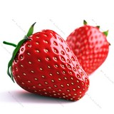

|  | Strawberry is a widely grown hybrid species of the genus Fragaria, collectively known as the strawberries, which are cultivated worldwide for their fruit. The fruit is widely appreciated for its characteristic aroma, bright red color, juicy texture, and sweetness. It is consumed in large quantities, either fresh or in such prepared foods as jam, juice, pies, ice cream, milkshakes, and chocolates. Artificial strawberry flavorings and aromas are also widely used in products such as candy, soap, lip gloss, perfume, and many others. The garden strawberry was first bred in Brittany, France, in the 1750s via a cross of Fragaria virginiana from eastern North America and Fragaria chiloensis, which was brought from Chile by Amédée-François Frézier in 1714. Cultivars of Fragaria × ananassa have replaced, in commercial production, the woodland strawberry (Fragaria vesca), which was the first strawberry species cultivated in the early 17th century. The strawberry is not, from a botanical point of view, a berry. Technically, it is an aggregate accessory fruit, meaning that the fleshy part is derived not from the plant's ovaries but from the receptacle that holds the ovaries. Each apparent "seed" (achene) on the outside of the fruit is actually one of the ovaries of the flower, with a seed inside it. In 2017, world production of strawberries was 9.2 million tonnes, led by China with 40% of the total. |